遊びで植物を育てよう
2024/09/27
ツツジが２つ枯れました。
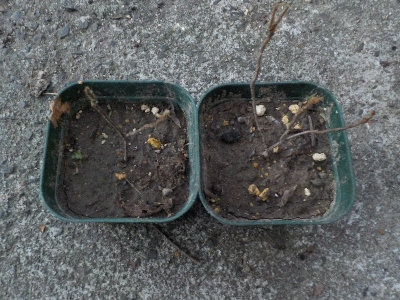
たぶん植え方が悪くて枯れたんだと思います。
根っこが鉢上げしたときの状態のままで、その後育った感じがありませんでした。
今度予備でとってあるものを鉢上げしようと思います。
【ツツジTOP】
【木TOP】
【園芸TOP】
2024/08/03
ツツジの鉢上げをしました。
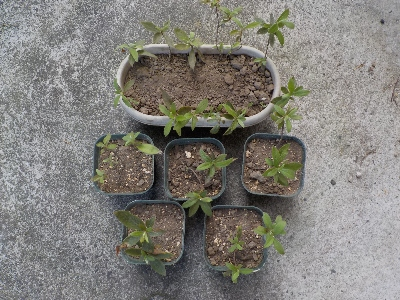
沢山挿し木に成功しました。5本は鉢に植え、10本は小さいプランターにまとめて植えました。
5本は普通に育てて、残りは予備にしようと思っています。
【ツツジTOP】
【木TOP】
【園芸TOP】
2024/04/27
八重のツツジのシーズンです。
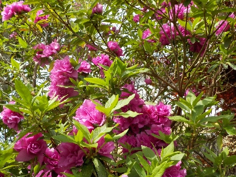
普通のツツジがだいぶ終わって、八重のツツジの時期になりました。
今年のツツジは花が一斉に咲かなかったので、開花期間が長かったです。
【ツツジTOP】
【木TOP】
【園芸TOP】
2024/03/24
ツツジの挿し木をしました。
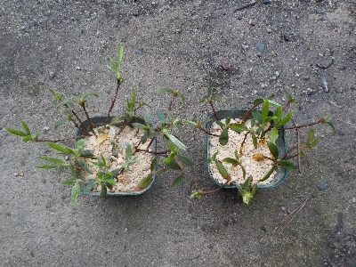
先日咲いていたツツジの木の枝を使って、挿し木をしました。
枝がとっても細いですが、本数を多めにしたので多分何本かは成功するでしょう。
【ツツジTOP】
【木TOP】
【園芸TOP】
2024/03/17
3月ですがツツジが咲きました。

このツツジはいつも変な時期に開花してるので、もう咲いてるかもと探してみたら1つ咲いてました。
この木を挿し木して増やそうかな。
【ツツジTOP】
【木TOP】
【園芸TOP】
2023/04/23
白いツツジが茶色っぽくなりました。
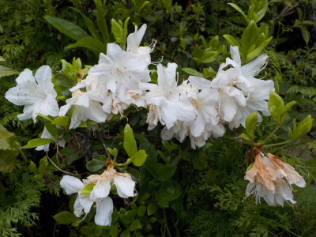
白いツツジの花が終わりかけで茶色くなっています。
これを見ると挿し木しなくていいかなと思いました。
【ツツジTOP】
【木TOP】
【園芸TOP】
2023/04/19
ひょろひょろのツツジを挿し木しようか考え中。
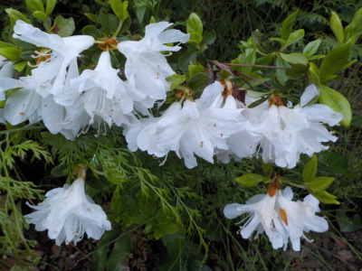
たぶん回りの木が大きくなって、日当たり悪くなってしまったツツジです。
花を枝で支えれないので、花が下を向いています。
白に透明感があって、弱々しくて繊細な感じがいいです。鉢植えで欲しいかな。
【ツツジTOP】
【木TOP】
【園芸TOP】
2023/04/09
ツツジが咲きだしました。
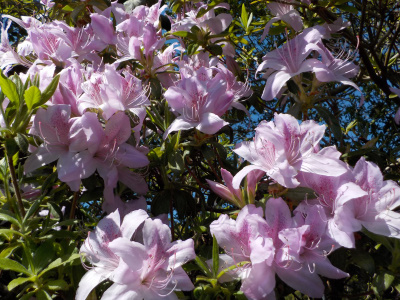
桜の花が終わってツツジの花の時期になりました。
今時ゴールデンウィークの頃にはツツジはもう終わっているので、ツツジが多い公園はそれまでに見に行ったほうがいいです。
【ツツジTOP】
【木TOP】
【園芸TOP】
2022/05/05
ツツジがだいぶ終わりました。
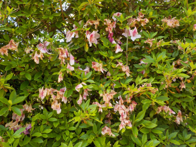
多くのツツジが只今こんな感じです。
こうゆうのが気になる人は花柄を取るんでしょうね。私は自然にまかせます。
【ツツジTOP】
【木TOP】
【園芸TOP】
2021/04/17
ツツジが咲いていますが、もう終わったものもあります。
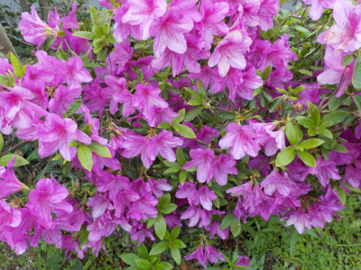
この木は今が絶好調に咲いています。
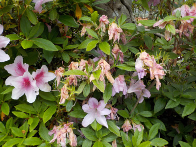
早くから咲いていたものは、ドンドン終わっていってます。
毎年ゴールデンウィークくらいにツツジ祭りがありますが、今年はゴールデンウィークには花の多くが終わっていそうです。
コロナの影響でイベントはほぼ中止なので、今年は関係なさそうですけど。
【ツツジTOP】 【木TOP】 【園芸TOP】
2020/04/18
ツツジが綺麗だったので写真を撮りました。
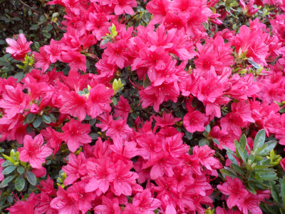
このツツジは今が見頃です。
ゴールデンウィークにはどこかの観光地や公園でツツジを見ることが多いですが、今年は新型コロナで無理かな。
屋外だから空いた時間に散歩するくらいだったらいいのかな？
【ツツジTOP】 【木TOP】 【園芸TOP】
2019/11/23
ツツジの種を採ろうとしましたが分かりませんでした。
時季的に遅かったようで、ほとんどの種は落ちていました。
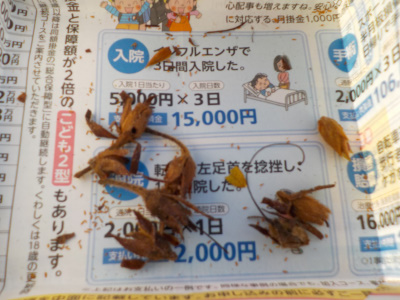
まだ実が開いて無くて、種が残っていそうなものをいくつか収穫しました。
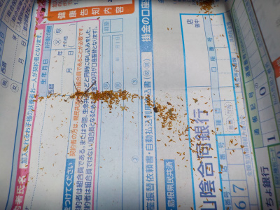
中からは小さくて黄色い粉が沢山出たんですが、小さすぎて種な感じがしません。
実を崩したときに粉が出ただけかも。
次回は9月とか10月に種を採ろうと思います。
【ツツジTOP】
【木TOP】
【園芸TOP】
畑仕事じゃないよ。
【おいしいものを食べよう。】【しっかり寝よう。】
【ソロ活をしよう!】【季節感のあることをしよう。】【動画視聴はほどほどに。】【当サイトの全てのコンテンツは無断転載禁止です。】